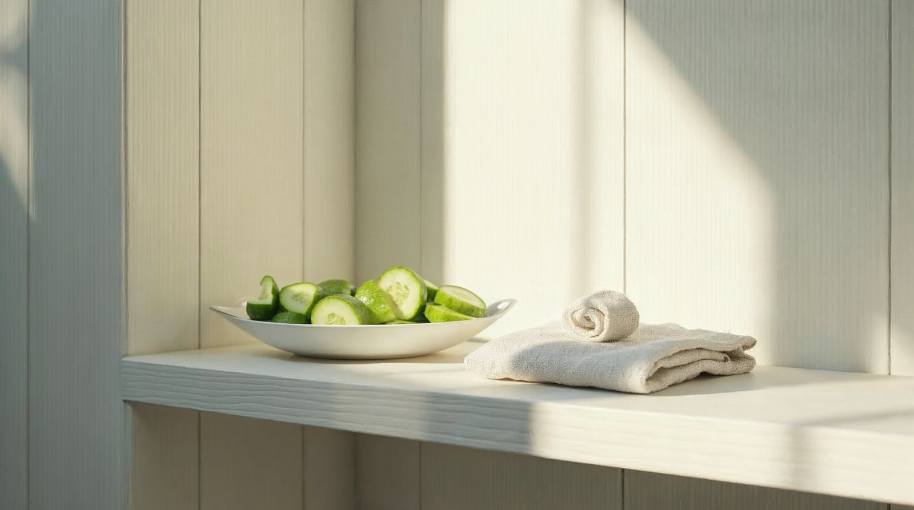
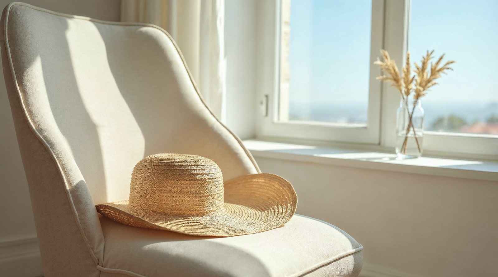
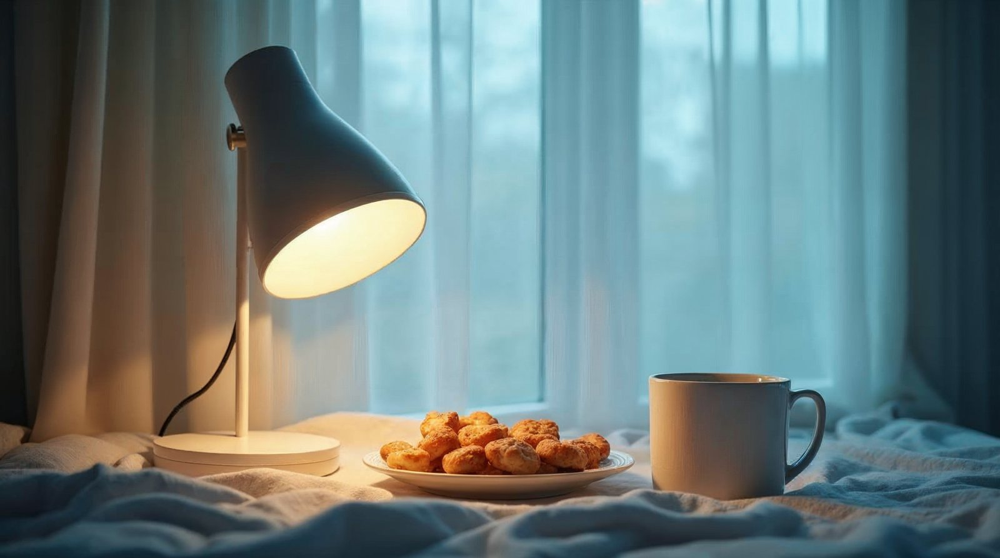
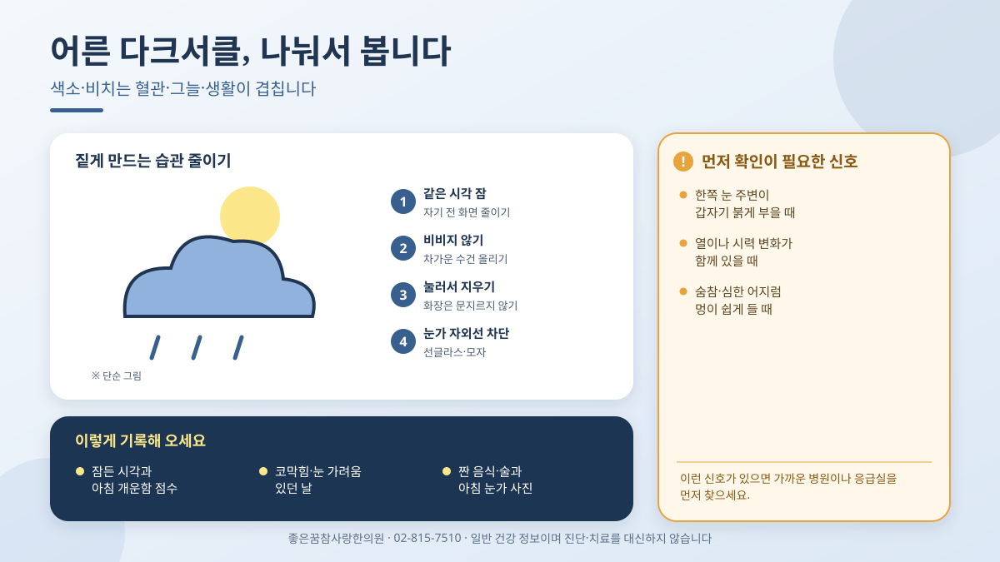

이종호 한의사 감수좋은꿈참사랑한의원 대표원장 (한의사 면허번호 19769)발행 2026-11-26 · 수정 2026-11-26
이 글의 차례
아침에 세수를 하고 거울을 보면 눈 밑이 거뭇하게 내려앉아 있습니다. 어젯밤 일찍 잤는데도 그렇습니다. 출근길에 동료가 "어제 늦게 잤어요? 피곤해 보여요"라고 말하면, 괜찮다고 웃으면서도 마음 한쪽이 가라앉습니다.
진료실에서 다크서클 이야기를 꺼내시는 분들은 대개 이렇게 말씀하십니다. "잠을 충분히 자도 없어지지 않아요." "컨실러로 가려도 오후면 다시 보여요." 피곤해서 생기는 줄 알았는데, 쉬어도 그대로라 혹시 몸 어딘가에 문제가 있는 건 아닌지 걱정하십니다.
어른의 다크서클은 한 가지 이유로만 생기지 않습니다. 눈 밑 피부의 색소, 얇은 피부 아래로 비치는 혈관, 눈 밑이 꺼지거나 불룩해서 생기는 그늘, 그리고 잠과 코막힘, 눈 비비는 습관 같은 생활의 영향이 함께 겹쳐 있는 경우가 많습니다.
이 글에서는 다크서클을 어떻게 나눠 보는지, 각각 무엇이 영향을 주는지, 생활에서 무엇을 해 볼 수 있고 진료실에서는 무엇을 함께 살피는지를 차례로 풀어 보겠습니다.

다크서클은 어떻게 나눠 보나요?
다크서클은 생기는 이유에 따라 크게 세 갈래로 나눠 볼 수 있습니다. 실제로는 두세 가지가 섞여 있는 경우가 많지만, 어느 쪽이 더 큰지 알면 무엇부터 살필지가 분명해집니다.
첫째는 갈색빛 다크서클입니다. 눈 밑 피부에 색소가 쌓여 갈색이나 거무스름한 빛을 띱니다. 자외선, 눈을 자주 비비거나 문지르는 습관, 피부염 뒤에 남은 자국, 타고난 피부색이 영향을 줍니다. 피부를 살짝 당겨도 색이 그대로 남는 것이 특징입니다.
둘째는 푸르스름한 다크서클입니다. 눈 밑 피부는 몸에서 가장 얇은 편이라 아래의 혈관이 비쳐 보이기 쉽습니다. 잠이 부족하거나 코가 막혀 눈 주변의 혈액 흐름이 정체되면 더 짙어 보입니다. 피곤한 날 아침에 유난히 심해지고 쉬면 조금 옅어지기도 합니다.
셋째는 그늘이 만드는 다크서클입니다. 나이가 들며 눈 밑 지방이 앞으로 불룩해지거나, 반대로 눈 밑이 꺼지면 그 아래로 그림자가 집니다. 위에서 내려오는 조명 아래에서 더 짙어 보이고, 고개를 들어 빛을 정면으로 받으면 옅어지는 것이 특징입니다.
왜 어른이 되어 다크서클이 짙어질까요
잠이 가장 먼저 떠오르지만, 잠의 길이보다 질이 더 중요한 경우가 많습니다. 시간은 충분히 자도 자주 깨거나, 코를 골거나, 자기 전까지 화면을 보다 잠드는 분은 아침에 눈 밑이 더 짙게 보이기 쉽습니다.
코막힘도 큰 영향을 줍니다. 알레르기 비염이나 만성 코막힘이 있으면 코 주변과 눈 밑의 혈액 흐름이 정체되어 눈 밑이 푸르스름하게 짙어집니다. 코가 가려워 눈과 코를 자주 비비는 습관까지 더해지면 색소가 쌓여 갈색빛도 함께 짙어질 수 있습니다.
눈의 피로도 함께 봅니다. 하루 종일 모니터와 휴대폰을 보면 눈 주변 근육이 지치고 눈이 건조해져 자꾸 비비게 됩니다. 비비는 자극이 반복되면 얇은 눈 밑 피부에 색소가 남기 쉽습니다.
몸 전체의 상태도 눈 밑에 드러납니다. 생리 양이 많거나 식사가 불규칙해 철분이 부족하면 얼굴빛이 창백해지면서 눈 밑이 상대적으로 더 거뭇해 보일 수 있습니다. 짠 음식과 술 다음 날 아침에 눈 밑이 붓고 그늘이 짙어지는 것도 흔합니다.
나이에 따른 변화도 있습니다. 나이가 들면 피부가 얇아지고 탄력이 줄어 혈관이 더 잘 비치고, 눈 밑 지방이 내려오거나 꺼지며 그늘이 생기기 쉽습니다. 이 부분은 생활 습관만으로 크게 달라지기 어렵다는 것을 알아 두시면 마음이 조금 편해집니다.
내 다크서클은 어느 쪽일까요?
밝은 곳에서 거울을 보며 아래처럼 확인해 보세요. 손가락은 아주 살살, 피부가 당겨질 정도로만 대시면 됩니다.
- 눈 밑 피부를 손가락으로 살짝 옆으로 당겨도 갈색이 그대로인지
- 피부를 당기면 색이 조금 옅어지고 푸르스름한 빛이 도는지
- 고개를 들어 빛을 정면으로 받으면 그늘이 옅어지는지
- 아침과 저녁, 잠을 설친 날과 잘 잔 날 색이 달라지는지
- 코가 막히거나 비염이 심한 계절에 더 짙어지는지
당겨도 그대로인 갈색이라면 색소 쪽, 당기면 옅어지고 푸르스름하다면 혈관 쪽, 빛의 방향에 따라 달라진다면 그늘 쪽에 가깝습니다. 잠과 코막힘에 따라 달라진다면 생활의 영향이 크다는 뜻입니다. 여러 가지가 섞여 있어도 괜찮습니다. 가장 두드러지는 쪽부터 살피면 됩니다.
비슷해 보이지만 다른 눈가의 변화
아침마다 눈두덩과 눈 밑이 퉁퉁 붓는 것은 다크서클과 함께 오는 경우가 많지만 따로 살핍니다. 짠 음식, 술, 잠의 질, 콩팥과 갑상선 같은 이유를 함께 생각합니다.
눈 밑이나 눈꺼풀이 파르르 떨리는 것은 피로와 카페인, 잠 부족과 관련된 경우가 많아 다크서클과 함께 오기도 하지만 서로 다른 불편입니다.
눈 주변 피부가 붉고 가렵고 각질이 일어난다면 피부염을 먼저 살펴야 합니다. 이 경우 긁고 문지르는 자극이 색소를 남겨 다크서클이 짙어지는 흐름으로 이어지기 쉬워, 가려움을 먼저 다스리는 것이 중요합니다.
생활에 따라 달라지는 눈 밑
야근이 잦고 잠드는 시각이 들쭉날쭉한 직장인은 아침마다 눈 밑이 무겁게 내려앉기 쉽습니다. 주말에 몰아서 자도 평일 리듬이 흐트러져 있다면 다크서클은 크게 달라지지 않는 경우가 많습니다.
아이를 키우며 밤잠이 자주 끊기는 부모님도 눈 밑 그늘을 많이 이야기하십니다. 이 시기에는 잠의 양을 늘리기 어려우니, 낮에 짧게 눈을 감고 쉬는 시간이나 화면을 보는 시간을 줄이는 쪽으로 함께 고민합니다.
환절기마다 비염이 심해지는 분은 그 계절에 다크서클도 함께 짙어집니다. 코의 불편을 함께 살피면 눈 밑도 따라 달라지는 것을 느끼시는 분이 많습니다.

계절과 나이에 따라 달라지는 눈 밑
겨울에는 실내 난방으로 공기가 건조해져 눈이 뻑뻑하고 자주 비비게 됩니다. 눈가 피부도 건조해져 결이 거칠어지면 그늘이 더 짙게 보이기 쉽습니다. 가습기로 방의 습도를 맞추고, 눈가에 순한 보습제를 가볍게 발라 주세요.
여름에는 자외선이 강해 눈가 색소가 짙어지기 쉽습니다. 얼굴에는 자외선 차단제를 잘 바르면서 눈가는 빼먹는 분이 많은데, 눈가까지 꼼꼼히 바르고 선글라스나 챙 넓은 모자를 함께 쓰시길 권합니다.
30대 후반부터는 눈 밑 피부가 조금씩 얇아지고 탄력이 줄어 혈관이 비치거나 그늘이 지는 쪽의 다크서클이 늘어납니다. 이 시기부터는 생활 습관으로 짙어지는 부분과 나이에 따른 구조 변화를 나눠 보는 것이 마음을 편하게 하는 데 도움이 됩니다.
먼저 이렇게 여쭙니다
다크서클로 오시면 저는 대략 이런 순서로 여쭙니다. 정확한 기억이 아니어도 괜찮으니, 떠오르는 대로 편하게 말씀해 주세요.
- 언제부터 눈 밑이 거뭇해졌고, 하루 중 언제 가장 짙은가요?
- 잠드는 시각과 깨는 시각, 밤에 깨거나 코를 고는 일이 있나요?
- 코막힘이나 비염, 눈 가려움이 자주 있나요?
- 하루에 화면을 보는 시간은 얼마나 되나요?
- 생리 양이 많거나 빈혈 이야기를 들은 적이 있나요?
- 눈가에 쓰는 화장품이나 클렌징 방법은 어떤가요?
이 대답을 모아 보면 다크서클이 잠과 코에서 오는지, 피부 자극에서 오는지, 몸 전체의 상태를 함께 봐야 하는지 방향이 잡힙니다.
일상에서 먼저 해 볼 수 있는 것
다크서클은 하루아침에 옅어지기 어렵지만, 짙게 만드는 습관을 줄이는 것부터 시작할 수 있습니다. 아래 가운데 하나를 골라 보세요.
- 잠드는 시각을 일주일 동안 같게 맞추고, 자기 전 화면 줄이기
- 눈이 가려워도 비비지 말고 차가운 수건을 잠시 올려 두기
- 화장은 문지르지 말고 눌러서 지우기
- 낮에는 눈가까지 자외선 차단제를 바르고 선글라스나 모자 쓰기
- 저녁에는 짠 음식과 술을 줄이고 물은 낮 동안 나눠 마시기
- 화면을 볼 때 20분마다 먼 곳을 20초 바라보기
눈가 피부는 아주 얇아서 작은 자극에도 색소가 남기 쉽습니다. 클렌징할 때 화장솜으로 박박 문지르기보다, 리무버를 묻힌 솜을 잠시 올려 두었다가 살살 닦아 내는 습관이 좋습니다. 수건으로 얼굴을 닦을 때도 눈가는 꾹꾹 눌러 물기만 없애 주세요.
코막힘이 있다면 잠자리 환경도 살펴보세요. 침구를 자주 털고 빨며, 방의 습도를 적당히 맞추고, 자기 전 따뜻한 물로 코 주변을 데워 주는 것도 도움이 될 수 있습니다. 비염이 심하다면 이비인후과 진료를 함께 받으시길 권합니다.
아침에 눈 밑이 붓고 그늘이 짙다면 차갑게 적신 수건을 1~2분 올려 두는 것만으로도 한결 가벼워질 수 있습니다. 잠잘 때 베개를 약간 높게 하는 것도 아침 붓기를 줄이는 데 도움이 됩니다.

피하면 좋은 습관
피곤할 때 눈을 손등으로 비비는 습관, 렌즈를 끼고 빼며 눈가를 세게 당기는 습관은 눈 밑 피부를 자극합니다. 렌즈를 다룰 때는 손을 씻고 눈가를 살짝만 당겨 주세요.
다크서클을 가리려고 두꺼운 화장을 하고 오래 문질러 펴 바르는 것도 자극이 됩니다. 가볍게 두드려 바르고, 집에 돌아오면 일찍 지워 피부를 쉬게 해 주세요.
잠이 부족한 날 커피를 여러 잔 마셔 버티는 습관도 밤잠을 다시 얕게 만들어 다음 날 아침 눈 밑을 무겁게 합니다. 커피는 오후 이른 시간까지만 드시길 권합니다.
인터넷에서 본 방법으로 눈가에 이것저것 바르거나 마사지를 세게 하는 것도 권하지 않습니다. 눈가 피부가 붉어지거나 가려워지면 오히려 색소가 남기 쉽습니다.
한의원에서 함께 살필 수 있는 경우
- 잠을 자도 개운하지 않고 아침마다 눈 밑이 무겁게 내려앉는 경우
- 코막힘이나 비염과 함께 눈 밑이 푸르스름하게 짙어지는 경우
- 쉽게 지치고 손발이 차며 얼굴빛이 창백한 경우
- 눈이 자주 피로하고 건조해 비비는 습관이 있는 경우
- 짠 음식이나 술 다음 날 눈 밑이 붓고 그늘이 짙어지는 경우
좋은꿈참사랑한의원에서는 진찰한 내용을 바탕으로 생활에서 바꿔 볼 것과 함께 침 치료, 한약 상담 가운데 지금 상태에 맞는 것을 정합니다. 다크서클 자체보다 잠과 코, 몸의 피로를 함께 살피는 경우가 많고, 한약을 상의할 때는 드시는 약을 모두 확인한 뒤 신중하게 정합니다.
색소를 옅게 하는 시술이나 눈 밑 지방에 관한 상담은 피부과에서, 빈혈이 걱정된다면 내과에서 혈액 검사를 함께 받아 보시길 권합니다. 다른 병원에서 받은 약은 상의 없이 멈추지 않습니다.
이렇게 기록해 오시면 상담이 쉬워집니다
다크서클은 하루와 계절에 따라 짙기가 달라집니다. 2주 정도 간단히 적어 보세요.
- 잠든 시각과 깬 시각, 아침 개운함을 0~10점으로
- 코막힘이나 눈 가려움이 있었던 날
- 화면을 오래 본 날과 눈을 비빈 것을 알아챈 때
- 짠 음식이나 술을 먹은 날
- 같은 조명과 각도에서 찍은 아침 눈가 사진
기록을 나란히 놓고 보면 다크서클이 짙었던 날이 잠을 설친 날, 코가 막힌 날과 겹치는 경우를 자주 봅니다. 그 연결이 무엇부터 바꿀지를 알려 줍니다. 사진은 매일이 아니어도 괜찮으니, 일주일에 두세 번 같은 조건에서 찍어 두시면 흐름을 비교하기 좋습니다.
눈 밑보다 하루를 먼저
다크서클은 얼굴에 드러나는 작은 변화이지만, 그 안에는 잠과 코, 눈의 피로, 몸의 기운까지 하루의 이야기가 담겨 있는 경우가 많습니다. 눈 밑만 들여다보기보다 하루 전체를 함께 돌아보시길 권합니다.
이번 주에는 눈이 가려울 때 비비는 대신 차가운 수건을 올려 두는 습관 하나만 시작해 보세요. 다음에 오실 때 기록과 아침 사진을 함께 보여 주시면, 거기서부터 함께 살펴보겠습니다. 피곤해 보인다는 말에 마음이 상하셨다면, 그 마음도 편하게 들려주세요. 눈 밑을 들여다보는 시간이 조금 덜 무거워지도록 함께 방법을 찾아보겠습니다.
이런 증상은 먼저 확인이 필요합니다
- 한쪽 눈 주변만 갑자기 붉게 붓고 아프며 열이나 시력 변화가 함께 있는 경우
- 눈 밑 그늘과 함께 숨이 차고 심하게 어지럽거나 쉽게 멍이 들고 피가 잘 멈추지 않는 경우
이런 신호가 있으면 한의원보다 가까운 병원이나 응급실을 먼저 찾으세요.
함께 읽으면 좋은 글
- 아이 눈 밑이 늘 거뭇한 다크서클은 왜 생기고 무엇을 살피나요?
- 아침마다 눈두덩과 얼굴이 퉁퉁 붓는 얼굴 부종은 무엇을 나눠 살피나요?
- 빈혈이 있다는 말을 듣고 어지럽고 쉽게 지칠 때, 철분과 생활은 어떻게 살피나요?
- 자기 전 침대에서 스마트폰을 보다 잠이 자꾸 늦어질 때, 불면은 어떻게 바꿔 가나요?
- 잠이 부족하면 피부가 푸석하고 트러블이 나는 이유는 무엇인가요?

여쭙는 것
- 언제부터 눈 밑이 거뭇해졌고, 하루 중 언제 가장 짙은가요?
- 잠드는 시각과 깨는 시각, 밤에 깨거나 코를 고는 일이 있나요?
- 코막힘이나 비염, 눈 가려움이 자주 있나요?
생활에서 해 볼 것
- 잠드는 시각을 일주일 동안 같게 맞추고, 자기 전 화면 줄이기
- 눈이 가려워도 비비지 말고 차가운 수건을 잠시 올려 두기
- 화장은 문지르지 말고 눌러서 지우기
한의원에서 함께 살필 것
- 잠을 자도 개운하지 않고 아침마다 눈 밑이 무겁게 내려앉는 경우
- 코막힘이나 비염과 함께 눈 밑이 푸르스름하게 짙어지는 경우
- 쉽게 지치고 손발이 차며 얼굴빛이 창백한 경우
먼저 확인이 필요한 신호
- 한쪽 눈 주변만 갑자기 붉게 붓고 아프며 열이나 시력 변화가 함께 있는 경우
- 눈 밑 그늘과 함께 숨이 차고 심하게 어지럽거나 쉽게 멍이 들고 피가 잘 멈추지 않…
한눈에 보는 표
| 구분 | 핵심 |
|---|---|
| 여쭙는 것 | 언제부터 눈 밑이 거뭇해졌고, 하루 중 언제 가장 짙은가요? 잠드는 시각과 깨는 시각, 밤에 깨거나 코를 고는 일이 있나요? |
| 생활에서 해 볼 것 | 잠드는 시각을 일주일 동안 같게 맞추고, 자기 전 화면 줄이기 눈이 가려워도 비비지 말고 차가운 수건을 잠시 올려 두기 |
| 한의원에서 함께 살필 것 | 잠을 자도 개운하지 않고 아침마다 눈 밑이 무겁게 내려앉는 경우 코막힘이나 비염과 함께 눈 밑이 푸르스름하게 짙어지는 경우 |
| 먼저 확인이 필요한 신호 | 한쪽 눈 주변만 갑자기 붉게 붓고 아프며 열이나 시력 변화가 함께 있는 경우 눈 밑 그늘과 함께 숨이 차고 심하게 어지럽거나 쉽게 멍이 들고 피가 잘 멈추지 않는 경우 |
자주 묻는 질문
잠을 많이 자면 다크서클이 없어지나요?
잠이 부족해서 짙어진 다크서클이라면 잠의 리듬을 맞추는 것이 도움이 될 수 있습니다. 하지만 색소나 그늘이 주된 이유라면 잠만으로는 크게 달라지지 않을 수 있습니다.
비염이 있으면 다크서클이 생기나요?
코막힘이 이어지면 눈 밑의 혈액 흐름이 정체되어 푸르스름하게 짙어질 수 있습니다. 코를 비비는 습관까지 더해지면 색소도 쌓이기 쉬워 코의 불편을 함께 살핍니다.
다크서클이 빈혈 때문일 수도 있나요?
철분이 부족하면 얼굴빛이 창백해지며 눈 밑이 상대적으로 짙어 보일 수 있습니다. 쉽게 지치고 어지럽다면 내과에서 혈액 검사를 받아 보시길 권합니다.
한약으로 다크서클을 없앨 수 있나요?
다크서클 자체를 없앤다고 말씀드리기는 어렵습니다. 잠과 코, 피로처럼 함께 얽힌 몸의 상태를 진찰한 뒤 필요하다고 판단되면 드시는 약을 확인하고 신중하게 상의합니다.
눈가 마사지를 하면 도움이 되나요?
세게 문지르는 마사지는 얇은 눈가 피부를 자극해 오히려 색소가 남기 쉽습니다. 차가운 수건을 잠시 올려 두거나 손끝으로 아주 가볍게 두드리는 정도를 권합니다.
좋은꿈참사랑한의원은 재진 때 지난번 이야기부터 이어서 여쭙니다. 진료시간과 예약은 오시는 길에서 확인하세요.
어디서 상담받을 수 있나요?
좋은꿈참사랑한의원은 서울 동작구 만양로2길 2 신성빌딩 3층·5층(서울 동작구 상도동, 7호선 상도역 3번 출구 근처)에 있습니다. 한의사 3명(이종호 대표원장, 조영기 수석진료원장, 정원영 진료원장)이 진료합니다. 진료시간은 평일 09:30~20:00(점심 13:00~14:00), 토·일·공휴일 09:30~15:00이며, 방문 전 전화로 확인을 권합니다. 예약은 네이버 예약, 카카오톡 상담, 전화 02-815-7510로 받습니다.
이 글은 일반적인 건강 정보이며 개인의 진단이나 치료를 대신하지 않습니다. 증상이 있거나 복용 중인 약이 있다면 진료를 통해 확인하세요. 치료 효과는 개인마다 다를 수 있습니다.
작성 기준: 일반적으로 알려져 있는 건강 정보를 참고해 정리했습니다(대표원장 감수). 증상 기록은 1~2주 동안 하루 1회, 비슷한 시간에 적어 오시면 지난 상태와 비교하기 쉽습니다.